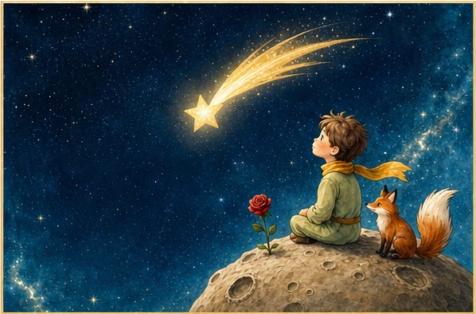
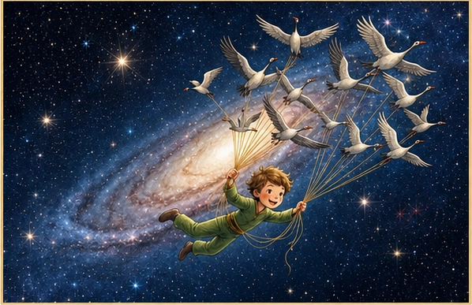
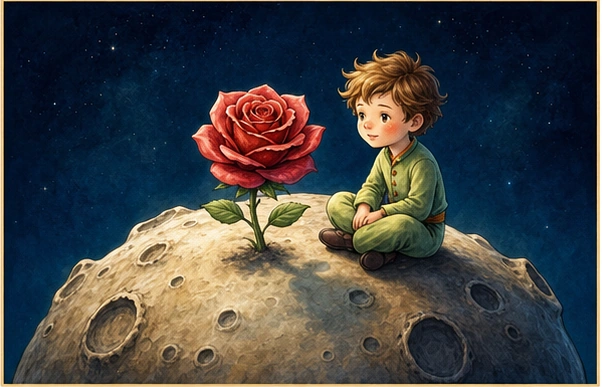
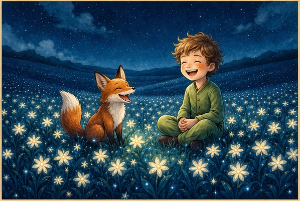
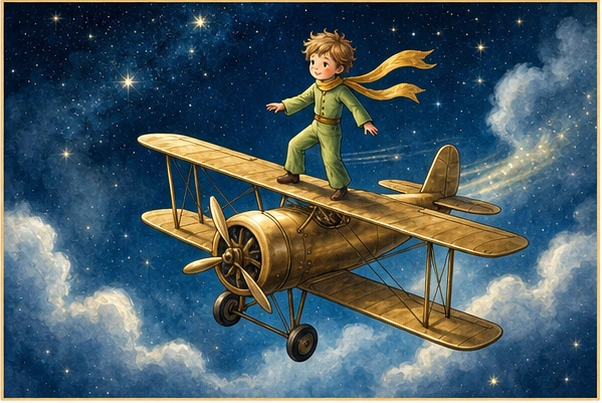

Baby Shower
Fecha4 de octubre de 2026
Hora04:00 PM
LugarCentro de eventos “Tu Espacio Cordillera”Torquemada 03161, Puente Alto
Abrir ubicación en Google Maps ↗Luciano Gabriel
Bustamante Sánchez
“Sólo se ve bien con el corazón; lo esencial es invisible a los ojos.”Comenzar


Capítulo I
para conocer a nuestro bebé.
Fecha estimada: 11 de noviembre de 2026
Capítulo II

Baby Shower
Confirmación de asistencia
Cuéntanos si podremos abrazarte ese día. Las observaciones pueden incluir alergias, restricciones alimentarias o necesidades especiales.
Una pausa importante
Si además quieres acompañar a Luciano con un detalle, preparamos algunas ideas. Y antes de partir, deja una estrella llena de amor en su cielo.
Ir al Cielo de Lucianito →
Capítulo III

Capítulo IV

Un aporte para el futuro
Si prefieres hacer un aporte, puedes transferirlo directamente a la cuenta de Vanessa.
El corazón de esta historia
Cada deseo se transforma en una estrella que podrá acompañarlo durante muchos años.
0 estrellasNo te vayas sin dejarle una estrella llena de amor a Luciano.
Ir al Cielo de Lucianito